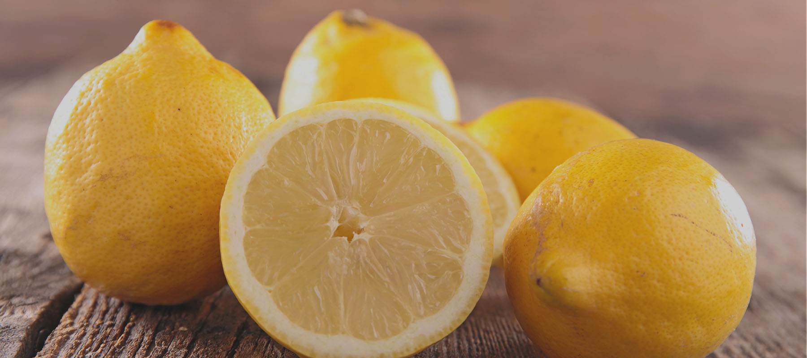

Price : Rs.60/-
Quantity : 8 pieces
Today's offer : 2%
You saved Rs.1.2/-.
About this item
- The lemon is a round, slightly elongated fruit, it has a strong and resistant skin, with an intense bright yellow colour
- The pulp is pale yellow, juicy and with an acid flavour; it is divided in gores
- It is used fresh for cooking, and its juice is used in the industry for processed foodstuffs